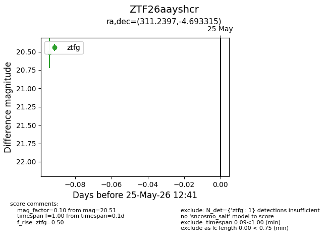
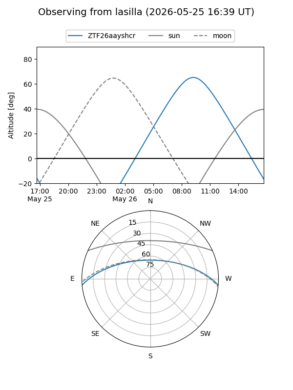
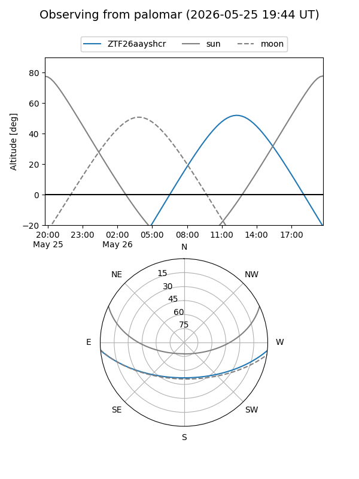

ZTF26aayshcr
Target ZTF26aayshcr at 2026-05-25 12:43
Aliases and brokers:
lsst-FINK: link
lsst-Lasair: link
lsst-ALeRCE: link
ztf-FINK: link
ztf-Lasair: link
ztf-ALeRCE: link
alt names
ZTF26aayshcr (ztf,fink_ztf)
Coordinates:
equatorial (ra, dec) = 311.2397,-4.69331
equatorial (HMS+DMS) = 20:44:57.52,-04:41:35.93
galactic (l, b) = (42.2064,-27.31747)
Flags:
Photometry:
last ztfg=20.51
1 ztfg detections
Lightcurve

Visibility


Additional plots